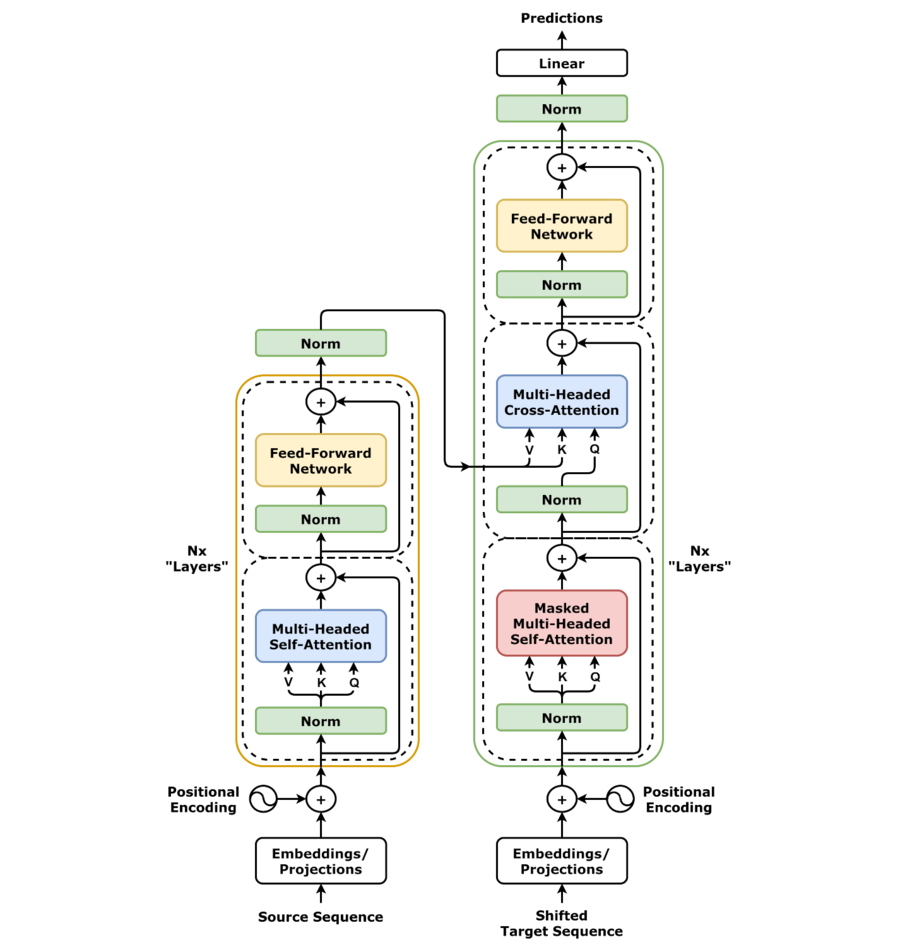
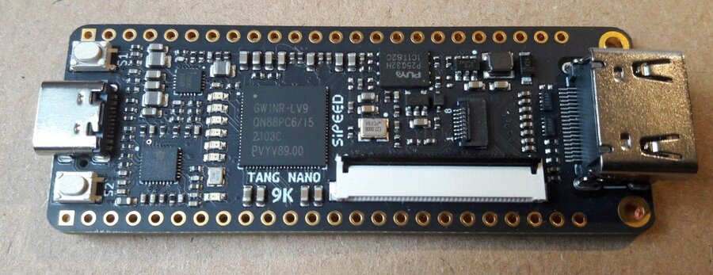
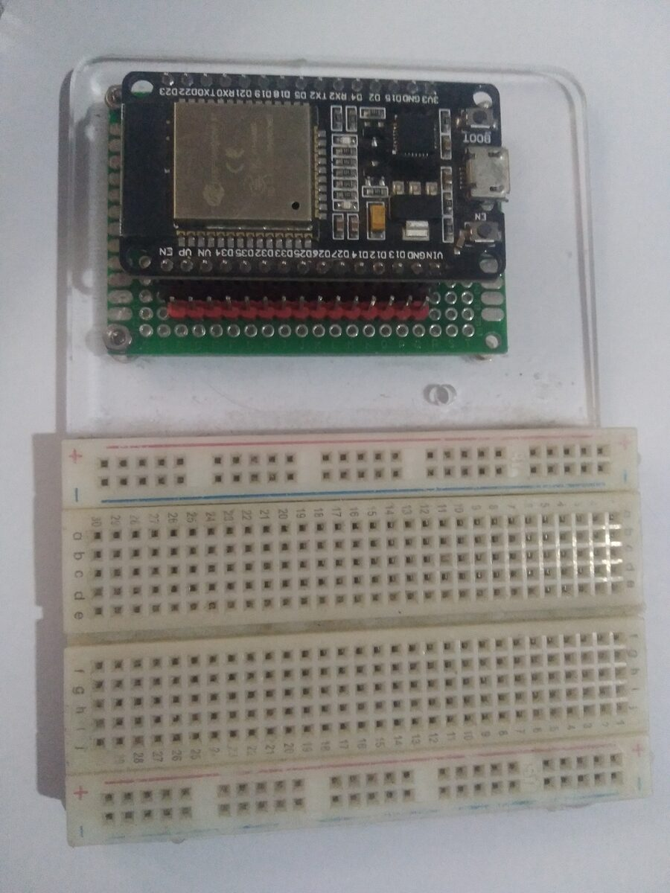

Proyectos web
Triple Espresso — Página de cafetería
Resumen
Landing page responsiva para una cafetería ficticia, desarrollada con HTML semántico y CSS (Flexbox), siguiendo un diseño de Figma con metodología BEM para mantener el código organizado.
Tecnologías
- HTML5 semántico y CSS3 con Flexbox.
- Metodología BEM para estructura escalable.
- Diseño responsivo (móvil, tablet y escritorio).
- Publicado en GitHub Pages.

Around The U.S.
Resumen
Aplicación web para explorar y compartir lugares emblemáticos de Estados Unidos, construida con TypeScript aplicando principios de Programación Orientada a Objetos para un código modular y mantenible.
Tecnologías
- TypeScript con clases y POO.
- Edición de perfil, tarjetas con "me gusta" y eliminación.
- Popup de imagen en tamaño completo.

Rastreador de gastos
Resumen
Aplicación interactiva en JavaScript puro para registrar y visualizar gastos personales organizados por categoría, sin frameworks externos.
Tecnologías
- JavaScript (DOM, manejo de eventos, render dinámico).
- Organización por categorías y totales.

Mis proyectos
Clasificación de causas de accidentes industriales con NLP
Resumen
Pipeline de NLP que compara Word2Vec, GloVe y SBERT como embeddings, y usa BERTopic para descubrir y etiquetar automáticamente causas de accidentes industriales en reportes eMARS, con clasificadores SVM evaluados por validación cruzada.
Tecnologías
- Python, Word2Vec, GloVe, SBERT, BERTopic.
- SVM, validación cruzada, Kappa de Cohen.
- Investigación publicada como paper en CISAP12.

CSNE-SoC — Motor neuronal sistólico en FPGA
Resumen
Co-diseño hardware/software de un arreglo sistólico configurable de unidades MAC (Multiply-Accumulate) sobre un SoC-FPGA, con integración de un procesador ARM Cortex-A9 y la fábrica FPGA vía un puente AXI.
Tecnologías
- VHDL-2008, arquitectura sistólica de PEs.
- Puente HPS-to-FPGA (AXI), software bare-metal en ARM.
- Caracterización de desempeño en hardware real.

AquaCartagena — Monitoreo de calidad del agua
Resumen
Sistema edge-IoT para monitoreo de calidad del agua en la Bahía de Cartagena: nodos sensores ESP32 distribuidos, comunicación LoRa y un gateway con Raspberry Pi que procesa y transmite los datos vía 4G.
Tecnologías
- ESP32 + sensores multiparamétricos, comunicación LoRa.
- Procesamiento edge en Python (Raspberry Pi, 4G).
- InfluxDB Cloud y dashboards en Grafana.

Habilidades y herramientas

HTML5

CSS

JavaScript

Git
GitHub

ChatGPT
Sobre mí
Desarrollador web junior con experiencia práctica creando
interfaces limpias y responsivas con HTML, CSS, JavaScript y
React, así como implementando lógica básica de back-end. He
trabajado en proyectos formativos que siguen procesos reales de
desarrollo, usando Git, GitHub y Figma.
Además, investigo aplicaciones de IA y sistemas embebidos: desde
clasificación de texto con NLP hasta arquitecturas de hardware en
FPGA. Disfruto colaborar en equipo, mantener un código claro y
resolver problemas de forma estructurada.